Part 1: Fit a Neural Field to a 2D Image
Our model is a coordinate-based neural field that maps 2D pixel coordinates to RGB values. It uses a positional encoding with 10 frequency bands, expanding each (x, y) input to a 42-dimensional vector. This encoded vector is passed through an MLP with three hidden layers, each with width 256 and ReLU activations, followed by a final linear layer and a sigmoid to produce RGB values in the range [0, 1]. The network is trained for 2000 iterations using the Adam optimizer with a learning rate of 1e-2, minimizing MSE over random batches of 10,000 pixels.
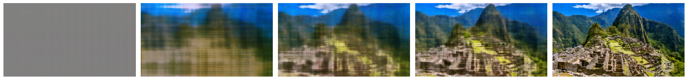
To study how model capacity affects reconstruction quality, we trained four versions of our neural field using two different positional encoding frequencies (1 and 4) and two network widths (16 and 64). We plotted the final reconstructions in a 2x2 grid. Lower max frequency and smaller hidden width significantly limit the model’s ability to represent fine details, producing blurry or overly smooth images, while higher frequencies and wider layers produce sharper, more accurate reconstructions.
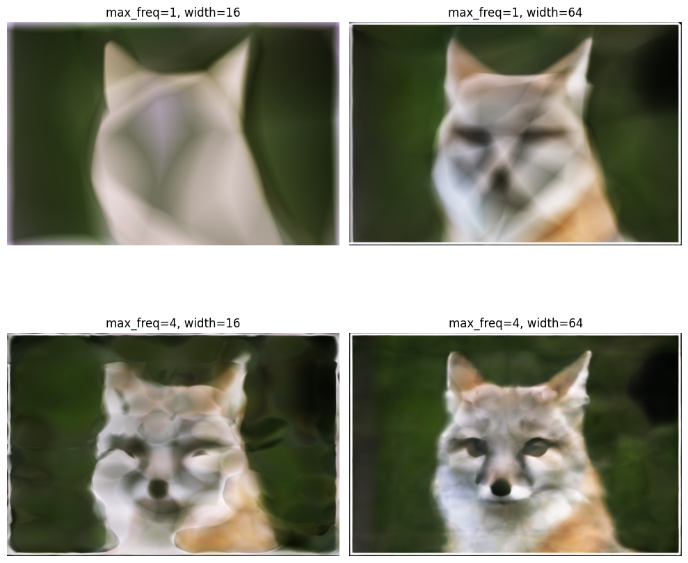
The PSNR curve for training on the machu picchu image is shown as follows
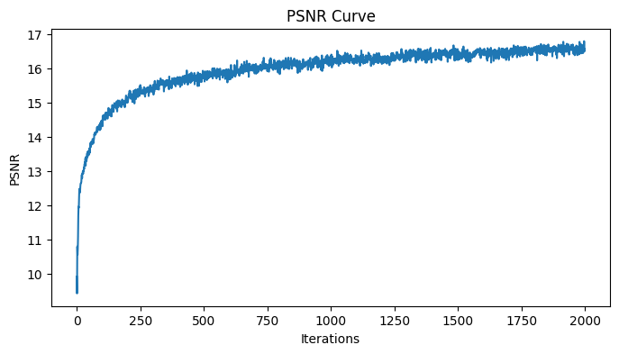
Part 2: Fit a Neural Radiance Field from Multi-view Images
We implement a full NeRF-style pipeline starting from images and camera poses. First, we build a `RaysData` helper that, given the intrinsics matrix K and camera-to-world matrices, converts pixel coordinates into ray origins and directions for every pixel in every training image, and then lets us randomly sample batches of rays together with their ground truth RGB colors. Along each sampled ray, `sample_along_rays` generates 3D points between a near and far plane using stratified sampling to add noise during training. The NeRF model itself uses separate positional encodings for 3D positions and 3D ray directions (with L_xyz=10 and L_dir=4), passes the encoded positions through a deep MLP with a skip connection, and splits into a density (sigma) head and a color head that conditions on both features and encoded directions. For rendering, `render_rays_nerf` evaluates the model at all sampled points along each ray, then `volrend` performs volumetric rendering by turning densities into alpha values, computing transmittance along the ray, and using these weights to composite the RGB values into a single color per ray. The `render_image` function applies this ray rendering in chunks over a full image grid for a given camera pose. Finally, `train_nerf` ties everything together: it repeatedly samples random rays, renders their predicted colors, computes an MSE loss against the ground truth, and optimizes the network with Adam and a cosine annealing learning rate schedule for 10,000 iterations, while optionally rendering a fixed test view over time and evaluating validation loss and PSNR at regular intervals.
To visualize the sampling process, we randomly select up to 100 rays from one training image and plot their origins, directions, and sampled 3D points in the scene, along with the camera frustums. Each ray originates at the camera center and extends into the scene according to the pixel’s direction, and we overlay the stratified sample points drawn along each ray between the near and far bounds. This visualization helps confirm that our ray generation, camera poses, and sampling strategy are all implemented correctly.
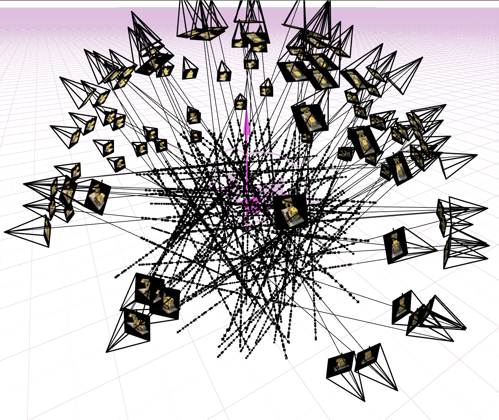
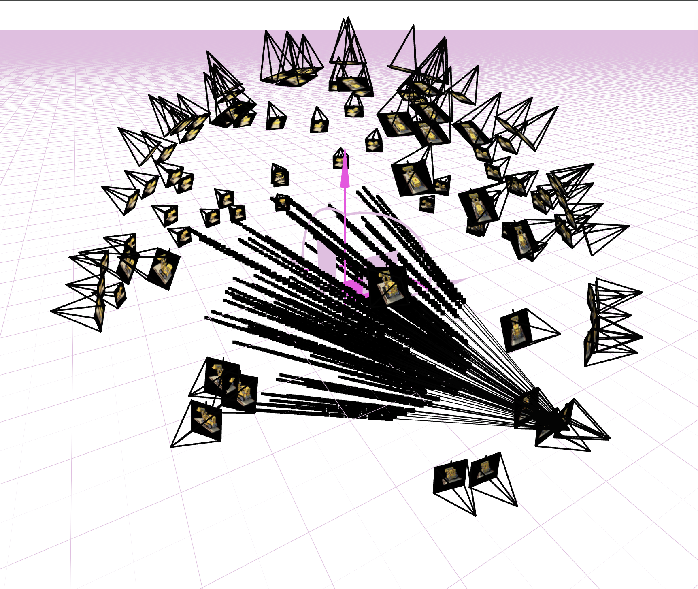
We visualize the NeRF training process in two ways. First, we render a fixed novel view (using one of the test cameras) at several checkpoints during training and display these predicted images side by side, showing how the reconstruction gradually sharpens and fills in scene details over time. Second, we plot the PSNR on the validation set of six held-out images as a function of training iteration, which provides a quantitative view of reconstruction quality and helps verify that the model is steadily improving and not overfitting.
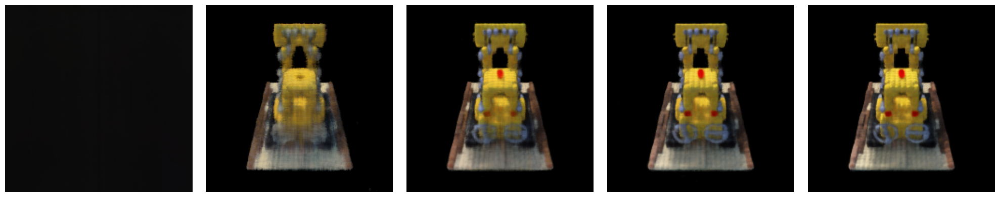
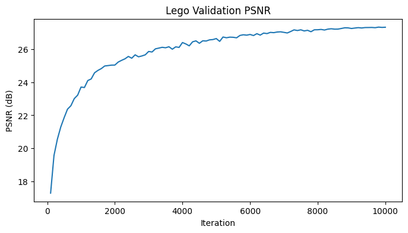
The video below shows a spherical rendering of the Lego scene using the provided test camera extrinsics (c2ws_test) after training the NeRF model for 50,000 iterations. We use the same architecture and settings as before: a NeRF with positional encoding (L_xyz = 10 for positions, L_dir = 4 for view directions), hidden width 256, and separate density and color branches. The model is trained with Adam using a cosine annealing learning rate schedule starting at 5e-4 and decaying to 1e-5, with a batch size of 10,000 rays, 64 samples per ray, and near/far bounds of 2.0 and 6.0. This long training run produces a much sharper and more detailed reconstruction than the early checkpoints.
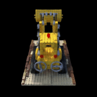
For the lafufu dataset, I trained the same NeRF architecture as before using the provided training images, camera poses, and intrinsic matrix. I ran the model for 10,000 iterations with a batch size of 10,000 rays, 64 samples per ray, and a cosine-annealed Adam optimizer starting at a learning rate of 5e-4. Because the lafufu scene is much smaller in scale than the Lego example, I reduced the near and far bounds to 0.02 and 0.5. During training I recorded the full loss curve and generated several intermediate novel-view renders using a fixed validation camera, which showed the reconstruction progressively sharpening over time.
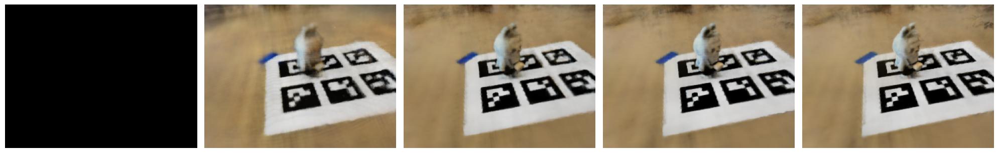
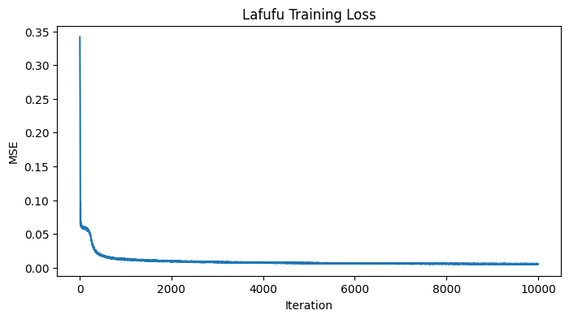
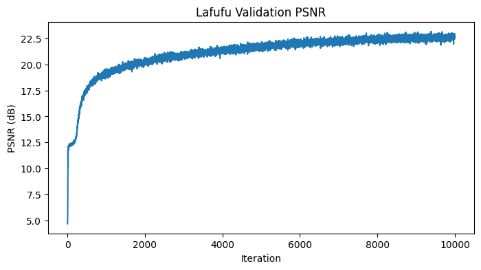
For the lafufu gif, I generated a synthetic orbiting camera path instead of using the dataset poses. Starting from a manually chosen camera position, I built a camera-to-world matrix that looks at the object, applied a 90-degree roll for correct orientation, and then rotated this pose around the object to create 60 evenly spaced viewpoints. I rendered each view with the trained NeRF (using the lafufu intrinsics and near/far bounds of 0.02 and 0.5) and combined the frames into a smooth orbiting gif.
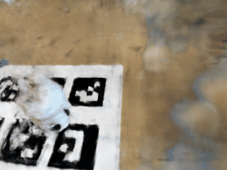
I repeated the same process on a small dataset I captured myself of a coffee cup. Using the same NeRF architecture, I trained for 10,000 iterations with a batch size of 10,000 rays, 64 samples per ray, and a cosine-annealed learning rate starting at 5e-4, again using near and far bounds of 0.02 and 0.5. I logged the full training and validation curves and saved intermediate renders during optimization. After training, I rendered the coffee cup from the provided test camera poses to create a smooth gif showing the object from novel viewpoints.

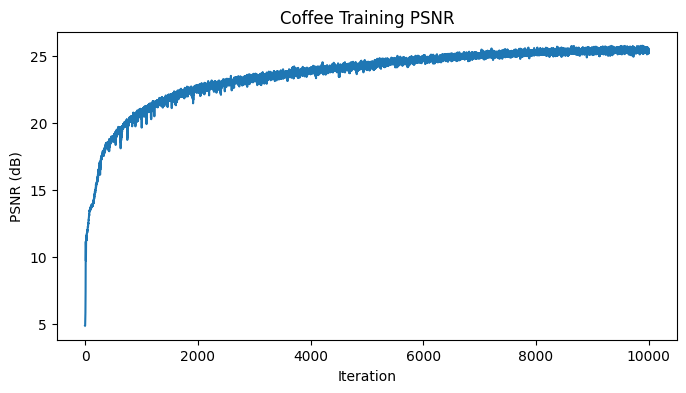
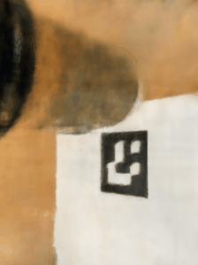
The coffee-cup gif is noticeably weaker, since I wasn't able to capture images from the back without covering the ArUco marker used for pose estimation. As a result, the model never sees those viewpoints and struggles to reconstruct the occluded regions. With more images taken from additional angles—and a better marker placement—the reconstruction quality and the resulting novel-view animation would improve significantly.